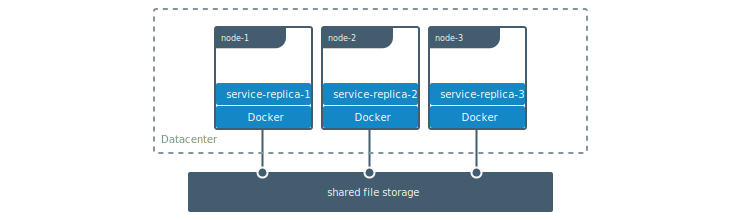
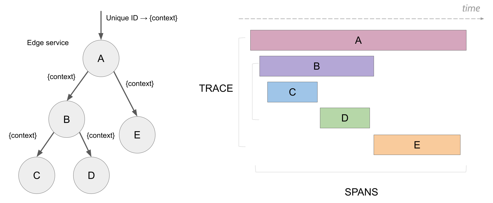

Vagrant
{kind=link}
Основные концепции
Vagrantfile
Boxes
Providers
Provisioning
Vagrantfile
Vagrant.configure("2") do |config|
# ...
endVagrantfile lookup
/home/mitchellh/projects/foo/Vagrantfile
/home/mitchellh/projects/Vagrantfile
/home/mitchellh/Vagrantfile
/home/Vagrantfile
/Vagrantfile
$VAGRANT_CWDVagrantfile merging
Box
Home (~/.vagrant.d)
Project
Multi-machine
Provider
Box
$ vagrant init hashicorp/bionic64Vagrant.configure("2") do |config|
config.vm.box = "hashicorp/bionic64"
endBox
$ ls ~/.vagrant.d/boxes/ubuntu-VAGRANTSLASH-lunar64/0/virtualbox
box.ovf
metadata.json
ubuntu-lunar-23.04-cloudimg-configdrive.vmdk
ubuntu-lunar-23.04-cloudimg.vmdk
ubuntu-lunar-23.04-cloudimg.mf
Vagrantfile
vagrant_insecure_key
vagrant_insecure_key.pubProvider
VirtualBox
VMware
Hyper-V
Libvirt
Docker
Provider configuration
Vagrant.configure("2") do |config|
# ...
config.vm.provider "virtualbox" do |vb|
vb.customize ["modifyvm", :id, "--cpuexecutioncap", "50"]
vb.memory = 1024
vb.cpus = 2
end
endProvider Usage
$ vagrant box list
bionic64 (virtualbox)
bionic64 (vmware_fusion)
$ vagrant up --provider=vmware_fusionProvision
Vagrant.configure("2") do |config|
# ... other configuration
config.vm.provision "shell" do |s|
s.inline = "echo hello"
end
endProvision run
$ vagrant up
$ vagrant reload --provision
$ vagrant provisionProvision run
Vagrant.configure("2") do |config|
# ... other configuration
config.vm.provision "bootstrap", type: "shell" do |s|
s.inline = "echo hello"
end
end$ vagrant provision --provision-with bootstrapProvision run
Vagrant.configure("2") do |config|
config.vm.provision "bootstrap", type: "shell", run: "never" do |s|
s.inline = "echo hello"
end
endProvision type
File
Shell
Ansible
Docker
Chef
Puppet
Salt
Networking
Vagrant.configure("2") do |config|
# ...
config.vm.network "forwarded_port", guest: 80, host: 8080
config.vm.hostname = "myhost.local"
config.vm.network "private_network", ip: "192.168.50.4"
config.vm.network "public_network", ip: "192.168.0.17"
endSynced Folders
Vagrant.configure("2") do |config|
# other config here
config.vm.synced_folder ".", "/vagrant", disabled: true
config.vm.synced_folder "src/", "/srv/website"
endSynced Folders Types
Vagrant.configure("2") do |config|
config.vm.synced_folder ".", "/vagrant", type: "nfs"
config.vm.synced_folder ".", "/vagrant", type: "rsync"
config.vm.synced_folder ".", "/vagrant", type: "smb"
endPlugins
## Installing a plugin from a known gem source
$ vagrant plugin install my-plugin
## Installing a plugin from a local file source
$ vagrant plugin install /path/to/my-plugin.gemDocker

Контейнерная виртуализация
Namespaces
Control groups
OverlayFS
Namespaces
Mount
Network
PID
User
IPC
UTS
Cgroup
Namespaces
$ ls -l /proc/$$/ns
lrwxrwxrwx 1 root root 0 Sep 28 09:50 cgroup -> 'cgroup:[4026531835]'
lrwxrwxrwx 1 root root 0 Sep 28 09:50 ipc -> 'ipc:[4026531839]'
lrwxrwxrwx 1 root root 0 Sep 28 09:50 mnt -> 'mnt:[4026531841]'
lrwxrwxrwx 1 root root 0 Sep 28 09:50 net -> 'net:[4026531840]'
lrwxrwxrwx 1 root root 0 Sep 28 09:50 pid -> 'pid:[4026531836]'
lrwxrwxrwx 1 root root 0 Sep 28 09:50 user -> 'user:[4026531837]'
lrwxrwxrwx 1 root root 0 Sep 28 09:50 uts -> 'uts:[4026531838]'Основные концепции
Image
Container
Docker Daemon
Docker Client
Registry
Архитектура
Images

Image manifest
{
"schemaVersion": 2,
"mediaType": "application/vnd.docker.distribution.manifest.v2+json",
"config": {
"mediaType": "application/vnd.docker.container.image.v1+json",
"size": 633,
"digest": "sha256:643d97e6291d22876100fff8e6edc90eccd8b045011cd8a4aa95524d8d5a711f"
},
"layers": [
{
"mediaType": "application/vnd.docker.image.rootfs.diff.tar.gzip",
"size": 1113611,
"digest": "sha256:e00c2c33f044a4c9b2ce7fd84a33c63bb82fdf88dcc17994a14ecbf0dd0be01d"
}
]
}Dockerfile
FROM ubuntu:22.04
COPY . /app
RUN make /app
CMD python /app/app.pyDockerfile multi-line
RUN apt-get update && apt-get install -y \
bzr \
cvs \
git \
mercurial \
subversion \
&& rm -rf /var/lib/apt/lists/*Layers cache

Layers cache

Dockerfile multi-stage
FROM golang:1.21 as build
WORKDIR /src
COPY main.go /src/main.go
RUN go build -o /bin/hello ./main.go
FROM scratch
COPY --from=build /bin/hello /bin/hello
CMD ["/bin/hello"]Container
$ docker run <image>
$ docker ps | head -1
CONTAINER ID IMAGE COMMAND CREATED STATUS PORTS NAMES
$ docker inspec <container-id>Container overlay
GraphDriver
{
"Data": {
"LowerDir": "/var/lib/docker/overlay2/475958ea3aea4a3c7c95ef8744e440f483a94ec2abde19b9a06addda6a940327-init/diff:/var/lib/docker/overlay2/39l57zdl339geagnufkc0erq3/diff",
"MergedDir": "/var/lib/docker/overlay2/475958ea3aea4a3c7c95ef8744e440f483a94ec2abde19b9a06addda6a940327/merged",
"UpperDir": "/var/lib/docker/overlay2/475958ea3aea4a3c7c95ef8744e440f483a94ec2abde19b9a06addda6a940327/diff",
"WorkDir": "/var/lib/docker/overlay2/475958ea3aea4a3c7c95ef8744e440f483a94ec2abde19b9a06addda6a940327/work"
},
"Name": "overlay2"
}Container config
{
"Hostname": "0adf0bbbdf2b",
"Domainname": "",
"User": "",
"AttachStdin": false,
"AttachStdout": true,
"AttachStderr": true,
"Tty": false,
"OpenStdin": false,
"StdinOnce": false,
"Env": [
"PATH=/usr/local/sbin:/usr/local/bin:/usr/sbin:/usr/bin:/sbin:/bin"
],
"Cmd": [
"/bin/hello"
],
"Image": "hello:latest",
"Volumes": null,
"WorkingDir": "/",
"Entrypoint": null,
"OnBuild": null,
"Labels": {}
}Client/Server
Unix socket
TCP
SSH
TLS(HTTPS)
Client context
$ docker context ls
NAME DESCRIPTION DOCKER ENDPOINT ERROR
default * Current DOCKER_HOST unix:///var/run/docker.sock
$ export DOCKER_HOST=tcp://localhost:2375
$ docker context ls
NAME DESCRIPTION DOCKER ENDPOINT ERROR
default * Current DOCKER_HOST tcp://localhost:2375Registry
Repository
Tag
Manifest
Blob
Repository
/v2/_catalog
{"repositories":["main","test/hello"]}Tag
/v2/test/hello/tags/list
{"name":"test/hello","tags":["0.1"]}Manifest
/v2/test/hello/manifests/0.1
{
"schemaVersion": 2,
"mediaType": "application/vnd.docker.distribution.manifest.v2+json",
"config": {
"mediaType": "application/vnd.docker.container.image.v1+json",
"size": 633,
"digest": "sha256:643d97e6291d22876100fff8e6edc90eccd8b045011cd8a4aa95524d8d5a711f"
},
"layers": [
{
"mediaType": "application/vnd.docker.image.rootfs.diff.tar.gzip",
"size": 1113611,
"digest": "sha256:e00c2c33f044a4c9b2ce7fd84a33c63bb82fdf88dcc17994a14ecbf0dd0be01d"
}
]
}Blob
/v2/test/hello/blobs/sha256:...
Network/Volume + Compose

Network
Publish ports
## -p, --publish ip:[hostPort]:containerPort
$ docker run -p 8080:80
$ docker run -p 192.168.1.100:8080:80
$ docker run -p 8080:80/udp
$ docker run -p 8080:80/tcp -p 8080:80/udp
Network resolve
$ docker run --dns
$ docker run --hostname
$ docker run --add-host
Network

Network inspect
$ docker network inspect bridge
[
{
"Name": "bridge",
"Id": "f7ab26d71dbd6f557852c7156ae0574bbf62c42f539b50c8ebde0f728a253b6f",
"Scope": "local",
"Driver": "bridge",
"EnableIPv6": false,
"IPAM": {
"Driver": "default",
"Options": null,
"Config": [
{
"Subnet": "172.17.0.1/16",
"Gateway": "172.17.0.1"
}
]
},
"Internal": false,
"Containers": {
"3386a527aa08b37ea9232cbcace2d2458d49f44bb05a6b775fba7ddd40d8f92c": {
"Name": "networktest",
"EndpointID": "647c12443e91faf0fd508b6edfe59c30b642abb60dfab890b4bdccee38750bc1",
"MacAddress": "02:42:ac:11:00:02",
"IPv4Address": "172.17.0.2/16",
"IPv6Address": ""
}
},
"Options": {
"com.docker.network.bridge.default_bridge": "true",
"com.docker.network.bridge.enable_icc": "true",
"com.docker.network.bridge.enable_ip_masquerade": "true",
"com.docker.network.bridge.host_binding_ipv4": "0.0.0.0",
"com.docker.network.bridge.name": "docker0",
"com.docker.network.driver.mtu": "9001"
},
"Labels": {}
}
]Manage networks
$ docker network create
$ docker network rm
$ docker network ls
$ docker network prune
Select network
$ docker run --network
$ docker network connect
$ docker network disconnect
Multiple networks

Network drivers
bridge
host
overlay
ipvlan
macvlan
none
Volume

Volume
-v|--volume=[HOST-DIR:]CONTAINER-DIR[:OPTIONS]
--mount type=TYPE,TYPE-SPECIFIC-OPTION[,...]
type=bind,source=/path/on/host,destination=/path/in/container
type=volume,source=my-volume,destination=/path/in/container
type=tmpfs,tmpfs-size=512M,destination=/path/in/container
Volume manage
$ docker volume create my-vol
$ docker volume ls
local my-vol
$ docker volume inspect my-vol
[
{
"Driver": "local",
"Labels": {},
"Mountpoint": "/var/lib/docker/volumes/my-vol/_data",
"Name": "my-vol",
"Options": {},
"Scope": "local"
}
]
$ docker volume rm my-volShared volume
Volume driver
$ docker volume create \
--driver local \
--opt type=cifs \
--opt device=//uxxxxx.your-server.de/backup \
--opt o=addr=uxxxxx.your-server.de,username=uxxxxxxx,password=*****,file_mode=0777,dir_mode=0777 \
--name cif-volume
$ docker plugin install --grant-all-permissions vieux/sshfs
$ docker volume create --driver vieux/sshfs \
-o sshcmd=test@node2:/home/test \
-o password=testpassword \
sshvolume
$ docker run -d \
--name sshfs-container \
--volume-driver vieux/sshfs \
--mount src=sshvolume,target=/app,volume-opt=sshcmd=test@node2:/home/test,volume-opt=password=testpassword \
nginx:latestCompose
docker-compose standalone
docker compose plugin
Compose
Compose file
services:
frontend:
image: example/webapp
ports:
- "443:8043"
networks:
- front-tier
- back-tier
configs:
- httpd-config
secrets:
- server-certificate
backend:
image: example/database
volumes:
- db-data:/etc/data
networks:
- back-tier
volumes:
db-data:
driver: flocker
driver_opts:
size: "10GiB"
configs:
httpd-config:
external: true
secrets:
server-certificate:
external: true
networks:
# The presence of these objects is sufficient to define them
front-tier: {}
back-tier: {}Ansible
Basic

Concepts
Control/Managed nodes
Inventory
Playbooks
Modules
Plugins
Collections
Inventory
mail.example.com
[webservers]
foo.example.com
bar.example.com
[dbservers]
one.example.com
two.example.com
three.example.com
Inventory
ungrouped:
hosts:
mail.example.com:
webservers:
hosts:
foo.example.com:
bar.example.com:
dbservers:
hosts:
one.example.com:
two.example.com:
three.example.com:Inventory
inventory/
01-openstack.yml # configure inventory plugin
02-dynamic-inventory.py # dynamic inventory script
03-static-inventory # add static hosts
group_vars/
all.yml # variables to all hosts
Playbook
$ ansible-playbook
$ ansible-pull
$ ansible-lint
Plays and tasks
- name: Update web servers
hosts: webservers
remote_user: root
tasks:
- name: Ensure apache is at the latest version
ansible.builtin.yum:
name: httpd
state: latest
- name: Write the apache config file
ansible.builtin.template:
src: /srv/httpd.j2
dest: /etc/httpd.conf
- name: Update db servers
hosts: databases
remote_user: root
tasks:
- name: Ensure postgresql is at the latest version
ansible.builtin.yum:
name: postgresql
state: latest
- name: Ensure that postgresql is started
ansible.builtin.service:
name: postgresql
state: startedHandlers
tasks:
- name: Template configuration file
ansible.builtin.template:
src: template.j2
dest: /etc/foo.conf
notify:
- Restart apache
- Restart memcached
handlers:
- name: Restart memcached
ansible.builtin.service:
name: memcached
state: restarted
- name: Restart apache
ansible.builtin.service:
name: apache
state: restarted
---
tasks:
- name: Restart everything
command: echo "this task will restart the web services"
notify: "restart web services"
handlers:
- name: Restart memcached
service:
name: memcached
state: restarted
listen: "restart web services"
- name: Restart apache
service:
name: apache
state: restarted
listen: "restart web services"Variables
- hosts: app_servers
vars:
app_path: {{ base_path }}/22
---
- hosts: all
remote_user: root
vars:
favcolor: blue
vars_files:
- /vars/external_vars.yml
---
- hosts: web_servers
tasks:
- name: Run a shell command
ansible.builtin.shell: /usr/bin/foo
register: foo_result
---
- name: Setting host facts using complex arguments
ansible.builtin.set_fact:
one_fact: something
other_fact: "{{ local_var * 2 }}"Conditionals
tasks:
- name: Shut down Debian flavored systems
ansible.builtin.command: /sbin/shutdown -t now
when: ansible_facts['os_family'] == "Debian"
---
tasks:
- ansible.builtin.shell: echo "only on Red Hat 6"
when: ansible_facts['os_family'] == "RedHat" and
ansible_facts['lsb']['major_release'] | int >= 6Loops
- name: Add several users
ansible.builtin.user:
name: "{{ item }}"
state: present
groups: "wheel"
loop:
- testuser1
- testuser2
---
- name: Fail if return code is not 0
ansible.builtin.fail:
msg: "The command ({{ it.cmd }}) did not have a 0 return code"
when: it.rc != 0
loop: "{{ echo.results }}"
loop_control:
pause: 3
loop_var: itTags
tasks:
- name: Install the servers
ansible.builtin.yum:
name:
- httpd
state: present
tags:
- packages
- webservers$ ansible-playbook --tags packages
Tags
tasks:
- name: Run the rarely-used debug task
ansible.builtin.debug:
msg: '{{ showmevar }}'
tags: [ never, debug ]
- name: Configure the service
ansible.builtin.template:
src: templates/src.j2
dest: /etc/foo.conf
tags:
- always
- template$ ansible-playbook --tags debug --skip-tags template
Jinja2
---
- name: Write hostname
hosts: all
tasks:
- name: "write hostname {{ ansible_facts['hostname'] }}"
ansible.builtin.template:
src: templates/test.j2
dest: /tmp/hostname
My name is {{ ansible_facts['hostname'] }}
{% if True %}
yay
{% endif %}
{% for i in seq -%}
{{ i }}
{%- endfor %}
Filters
{{ some_variable | default(5) }}
{{ dict | dict2items }}
{{ some_variable | to_json }}
Lookups
vars:
motd_value: "{{ lookup('file', '/etc/motd') }}"
tasks:
- debug:
msg: "motd value is {{ motd_value }}"
Roles
roles/
common/
tasks/
main.yml
handlers/
main.yml
templates/
ntp.conf.j2
files/
bar.txt
foo.sh
vars/
main.yml
defaults/
main.yml
meta/
main.yml
library/
module_utils/
lookup_plugins/Roles
- hosts: webservers
roles:
- common
- webservers
---
- hosts: webservers
tasks:
- name: Include the foo_app_instance role
include_role:
name: foo_app_instanceModules
$ ansible webservers -m service -a "name=httpd state=started"
$ ansible webservers -m ping
$ ansible webservers -m command -a "/sbin/reboot -t now"
$ ansible-doc command
$ ansible-doc -l
- name: reboot the servers
command: /sbin/reboot -t now
- name: restart webserver
service:
name: httpd
state: restartedPlugins
- hosts: leaf01
connection: httpapi
gather_facts: false
tasks:
- name: type a simple arista command
eos_command:
commands:
- show version | json
register: command_output
---
vars:
kv: "{{ lookup('consul_kv', 'key', host=localhost) }}"Collections
namespace/
├── collectionA/
| ├── docs/
| ├── galaxy.yml
| ├── plugins/
| │ ├── README.md
| │ └── modules/
| ├── README.md
| └── roles/
└── collectionB/
├── docs/
├── galaxy.yml
├── plugins/
│ ├── connection/
│ └── modules/
├── README.md
└── roles/$ ansible-galaxy collection
Salt
{kind=link}
Architecture

Concepts
Master/Minion
Modules/States/Formulas
Grains/Pillar
Beacons/Reactors
Master/Minion

Modules

States

States
{kind=link}
Jinja
# Declare Jinja list
{% set users = ['fred', 'bob', 'frank'] %}
# Jinja `for` loop
{% for user in users%}
create_{{ user }}:
user.present:
- name: {{ user }}
{% endfor %}
Grains

Grains
salt -G 'os:CentOS' test.version
{{ grains['os'] }}
Pillar
{kind=link}
Pillar
/srv/pillar/top.sls:
base:
'*':
- example
/srv/pillar/example.sls:
pillar1: value
pillar2:
- value
- value
pillar3:
sub_key:
- value
- value{{ pillar['foo']['bar']['baz'] }}
Beacons
Beacons
beacons:
inotify:
- files:
/etc/named.conf:
mask:
- close_write
- create
- delete
- modify
- disable_during_state_run: True
salt/beacon/20190418-sosf-master/inotify//etc/named.conf {
"_stamp": "2019-05-06T19:30:35.397508",
"change": "IN_IGNORED","id": "20190418-sosf-master",
"path": "/etc/named.conf"
}Reactors

Reactors
/etc/salt/master.d/reactor.conf:
reactor:
- 'salt/minion/*/start':
- /srv/reactor/start.sls
- 'mycustom/app/tag':
- /srv/reactor/mycustom.sls
- salt/beacon/*/inotify//etc/important_file:
- /srv/reactor/revert.sls
---
/srv/reactor/restart-web-farm.sls:
restart_service:
Local.service.restart:
- tgt: 'web*'
- arg:
- httpdSecret Management

Ansible Vault
create/view/edit
decrypt/encrypt/encrypt_string
rekey
Ansible Vault
$ANSIBLE_VAULT;1.2;AES256;dev
37636561366636643464376336303466613062633537323632306566653533383833366462366662
6565353063303065303831323539656138653863353230620a653638643639333133306331336365
62373737623337616130386137373461306535383538373162316263386165376131623631323434
3866363862363335620a376466656164383032633338306162326639643635663936623939666238
3161
Age
passphrase
keys
Age
$ age -p secrets.txt > secrets.txt.age
Enter passphrase (leave empty to autogenerate a secure one):
Using the autogenerated passphrase "release-response-step-brand-wrap-ankle-pair-unusual-sword-train".
$ age -d secrets.txt.age > secrets.txt
Enter passphrase:
Age
$ cat recipients.txt
# Alice
age1ql3z7hjy54pw3hyww5ayyfg7zqgvc7w3j2elw8zmrj2kg5sfn9aqmcac8p
# Bob
age1lggyhqrw2nlhcxprm67z43rta597azn8gknawjehu9d9dl0jq3yqqvfafg
$ age -R recipients.txt example.jpg > example.jpg.age
Sops
PGP/AGE
KMS Azure/AWS/GCP
Hashicorp Vault
Sops
command line
$ sops --encrypt --age age1yt3tfqlfrwdwx... \
test.yaml > test.enc.yaml
.sops.yaml
creation_rules:
- pgp: >-
85D77543B3D624B63CEA9E6DBC17301B491B3F21,
FBC7B9E2A4F9289AC0C1D4843D16CEE4A27381B4
Sops Types
YAML
JSON
ENV
INI
Sops Types
$ sops -e myfile.json > myfile.json.enc
$ sops -d --input-type json myfile.json.enc
Sops Exec
$ sops exec-env out.json 'echo secret: $database_password; ./database-import'
secret: jf48t9wfw094gf4nhdf023r
$ sops exec-file --no-fifo out.json 'TMPFILE={} sh'
sh-3.2$ echo $TMPFILE
/tmp/.sops506055069/tmp-file291138648
Hashicorp Vault
{kind=link}
Hashicorp Vault
{kind=link}
KV Engine
{kind=link}
LDAP Engine
{kind=link}
PKI Engine
{kind=link}
Transit Engine
{kind=link}
SSH OTP
{kind=link}
Vault Agent
{kind=link}
RabbitMQ

Concepts
Publisher/Consumer
Queue
Exchange
Binding
Messages
AMQP

Publisher
{kind=link}
Open connection/channel
Declare entities
Write exchange
Define delivery mode/routing key
Exchange/Bindings
{kind=link}
Exchange Types
{kind=link}
Direct
Fanout
Topic
Headers
Exchange Attributes
Name
Durability
Auto-delete
Queues

Properties
Name
Durable
Exclusive
Auto-delete
Messages
Payload
Routing Key
Delivery Mode
Headers
Consumer
{kind=link}
Open connection/channel
Declare entities
Consume from queue
Consume Messages
Push/Pull API
Ack/Nack/AutoAck
Prefetch
Kafka

Concepts
Producer/Consumer
Cluster/Broker
Topic/Partitions
Consumer Groups
Concepts
{kind=link}
Cluster
Broker
Controller(w/o ZooKeeper)
Topic/Partitions
{kind=link}
Retention
Replication Factor
Leader
Follower
Message
Value
Timestamp
Key
Headers
Producer

acks settings
partition assignment
Consumer
__consumer_offsets
Terraform


{kind=link}
Concepts
Configuration
State
Provider
Configuration
resource "aws_vpc" "main" {
cidr_block = var.base_cidr_block
}
<BLOCK TYPE> "<BLOCK LABEL>" "<BLOCK LABEL>" {
# Block body
<IDENTIFIER> = <EXPRESSION> # Argument
}Terraform
terraform {
required_providers {
aws = {
version = ">= 2.7.0"
source = "hashicorp/aws"
}
}
experiments = [example]
}Provider
terraform {
required_providers {
mycloud = {
source = "mycorp/mycloud"
version = "~> 1.0"
}
}
}
provider "mycloud" {
# ...
}Resource
resource "aws_instance" "web" {
ami = "ami-a1b2c3d4"
instance_type = "t2.micro"
}Variables
variable "image_id" {
type = string
}
variable "availability_zone_names" {
type = list(string)
default = ["us-west-1a"]
}
variable "docker_ports" {
type = list(object({
internal = number
external = number
protocol = string
}))
default = [
{
internal = 8300
external = 8300
protocol = "tcp"
}
]
}
resource "aws_instance" "example" {
instance_type = "t2.micro"
ami = var.image_id
}$ terraform apply -var="image_id=ami-abc123"
$ terraform apply -var-file="testing.tfvars"Data Sources
data "aws_ami" "example" {
most_recent = true
owners = ["self"]
tags = {
Name = "app-server"
Tested = "true"
}
}CI/CD

CI/CD
Plan
Code
Build
Test
Release
Deploy
Operate
Monitor
Pipeline

CI/CD Tools


Gitlab CI
Pipelines
Runners
Variables
Components
Gitlab Pipeline
{kind=link}
stages:
- build
- test
- deploy
default:
image: alpine
build_a:
stage: build
script:
- echo "This job builds something."
build_b:
stage: build
script:
- echo "This job builds something else."
test_a:
stage: test
script:
- echo "This job tests something. It will only run when all jobs in the"
- echo "build stage are complete."
test_b:
stage: test
script:
- echo "This job tests something else. It will only run when all jobs in the"
- echo "build stage are complete too. It will start at about the same time as test_a."
deploy_a:
stage: deploy
script:
- echo "This job deploys something. It will only run when all jobs in the"
- echo "test stage complete."
environment: production
deploy_b:
stage: deploy
script:
- echo "This job deploys something else. It will only run when all jobs in the"
- echo "test stage complete. It will start at about the same time as deploy_a."
environment: production{kind=link}
stages:
- build
- test
- deploy
default:
image: alpine
build_a:
stage: build
script:
- echo "This job builds something quickly."
build_b:
stage: build
script:
- echo "This job builds something else slowly."
test_a:
stage: test
needs: [build_a]
script:
- echo "This test job will start as soon as build_a finishes."
- echo "It will not wait for build_b, or other jobs in the build stage, to finish."
test_b:
stage: test
needs: [build_b]
script:
- echo "This test job will start as soon as build_b finishes."
- echo "It will not wait for other jobs in the build stage to finish."
deploy_a:
stage: deploy
needs: [test_a]
script:
- echo "Since build_a and test_a run quickly, this deploy job can run much earlier."
- echo "It does not need to wait for build_b or test_b."
environment: production
deploy_b:
stage: deploy
needs: [test_b]
script:
- echo "Since build_b and test_b run slowly, this deploy job will run much later."
environment: production{kind=link}
# parent: /.gitlab-ci.yml
stages:
- triggers
trigger_a:
stage: triggers
trigger:
include: a/.gitlab-ci.yml
rules:
- changes:
- a/*
trigger_b:
stage: triggers
trigger:
include: b/.gitlab-ci.yml
rules:
- changes:
- b/*
# child: /a/.gitlab-ci.yml
stages:
- build
- test
- deploy
build_a:
stage: build
script:
- echo "This job builds something."
test_a:
stage: test
needs: [build_a]
script:
- echo "This job tests something."
deploy_a:
stage: deploy
needs: [test_a]
script:
- echo "This job deploys something."
environment: productionJenkins
Job/Pipeline
Master(Controller)
Node/Agent
Jenkins Pipeline
Scripted
Declarative
Scripted Pipeline
# Jenkinsfile
node {
stage('Build') {
//
}
stage('Test') {
//
}
stage('Deploy') {
//
}
}Declarative Pipeline
# Jenkinsfile
pipeline {
agent any
stages {
stage('Build') {
steps {
//
}
}
stage('Test') {
steps {
//
}
}
stage('Deploy') {
steps {
//
}
}
}
}Prometheus

Concepts
Metrics
TSDB
Exporters
Service Discovery
PromQL
Visualization
Alerting
Architecture

Metrics
<metric_name>{<label>=<value>, ...}Samples: [float64 value, millisecond timestamp]
Time Series
Metric Types
Counter
Gauge
Histogram
Summary
PromQL
http_requests_total
http_requests_total{job="apiserver", handler="/api/comments"}
rate(http_requests_total[5m])
sum by (job) (
rate(http_requests_total[5m])
)
(instance_memory_limit - instance_memory_usage) / 1024 / 1024Visualization
{kind=link}
Visualization

Alerting
Rules
Notifications
Grouping
Inhibition
Silences
Alerting Rules
groups:
- name: example
rules:
- alert: HighRequestLatency
expr: job:request_latency_seconds:mean5m{job="myjob"} > 0.5
for: 10m
labels:
severity: page
annotations:
summary: High request latency
ELK

Components
Elasticsearch
Logstash
Kibana
*beats
Architecture

Architecture
{kind=link}
Elasticsearch
Index
Mapping
Document
Field
Search
GET /_search
{
"query": {
"query_string": {
"query": "(new york city) OR (big apple)",
"default_field": "content"
}
}
}
Elastic Index Shards
{kind=link}
Elastic Index Status
Green
Yellow
Red
Elastic ILM
{kind=link}
Elastic Nodes
Master
Data
Ingest
Logstash
input {
...
}
filter {
...
}
output {
...
}
Kibana
Visualization
Dashboards
Search and Analytics
Monitoring and Alerting
Jaeger

Concepts
Trace
Span
Tags/Attributes
Logs/Events
Provider
Exporter
Resource
Traces/Spans
{kind=link}
End-to-End Tracing
{kind=link}
End-to-End Tracing
{kind=link}
Components
Tracing SDK
Collector
Query
Ingester
Components
{kind=link}
Opentelemetry

Observability

Signals
Traces
Metrics
Logs
Components
Specification
Instrumentation
Collector
Instrumentation
Zero-code
Code-based
Collector

Collector
receivers:
otlp:
protocols:
grpc:
endpoint: 0.0.0.0:4317
http:
endpoint: 0.0.0.0:4318
processors:
batch:
exporters:
otlp:
endpoint: otelcol:4317
service:
pipelines:
traces:
receivers: [otlp]
processors: [batch]
exporters: [otlp]
metrics:
receivers: [otlp]
processors: [batch]
exporters: [otlp]
logs:
receivers: [otlp]
processors: [batch]
exporters: [otlp]Istio

Service Mesh

Service Mesh

Concepts
Traffic managment
Observability
Security
Extensibility
Traffic managment

Traffic managment
VirtualService
DestinationRule
Gateway
ServiceEntry
Traffic managment
Timeouts
Retries
Circuit breakers
Fault injection
Security

Observability
{kind=link}
Metrics
envoy_cluster_internal_upstream_rq{code="2xx",_name="xds-grpc"} 7163
envoy_cluster_upstream_rq_completed{cluster_name="xds-grpc"} 7164
envoy_cluster_ssl_connection_error{cluster_name="xds-grpc"} 0
envoy_cluster_lb_subsets_removed{cluster_name="xds-grpc"} 0
envoy_cluster_internal_upstream_rq_code="503",_name="xds-grpc"} 1
Logs
[2020-11-25T21:26:18.409Z] "GET /status/418 HTTP/1.1" 418 -
via_upstream - "-" 0 135 4 4 "-" "curl/7.73.0-DEV"
"84961386-6d84-929d-98bd-c5aee93b5c88" "httpbin:8000"
"10.44.1.27:80" outbound|8000||httpbin.foo.svc.cluster.local
10.44.1.23:37652 10.0.45.184:8000 10.44.1.23:46520 - default
Traces
{kind=link}
Kiali
{kind=link}
Kiali
{kind=link}
ArgoCD
{kind=link}
Concepts
Application
Target State
Live State
Sync
Health
Architecture
{kind=link}
Application
apiVersion: argoproj.io/v1alpha1
kind: Application
metadata:
name: guestbook
namespace: argocd
spec:
project: default
source:
repoURL: https://github.com/argoproj/argocd-example-apps.git
targetRevision: HEAD
path: guestbook
destination:
server: https://kubernetes.default.svc
namespace: guestbookTools
directory(yaml/json/jsonnet)
kustomize
helm
custom plugin
ApplicationSet
apiVersion: argoproj.io/v1alpha1
kind: ApplicationSet
metadata:
name: guestbook
spec:
goTemplate: true
goTemplateOptions: ["missingkey=error"]
generators:
- list:
elements:
- cluster: engineering-dev
url: https://1.2.3.4
- cluster: engineering-prod
url: https://2.4.6.8
- cluster: finance-preprod
url: https://9.8.7.6
template:
metadata:
name: '{{.cluster}}-guestbook'
spec:
project: my-project
source:
repoURL: https://github.com/infra-team/cluster-deployments.git
targetRevision: HEAD
path: guestbook/{{.cluster}}
destination:
server: '{{.url}}'
namespace: guestbookUI